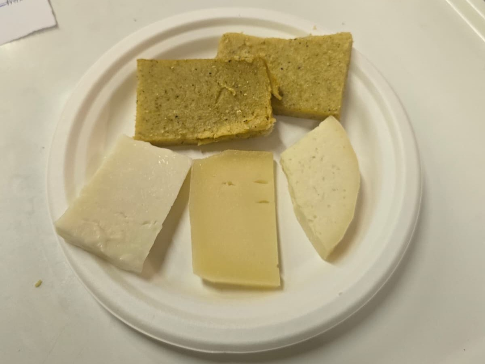
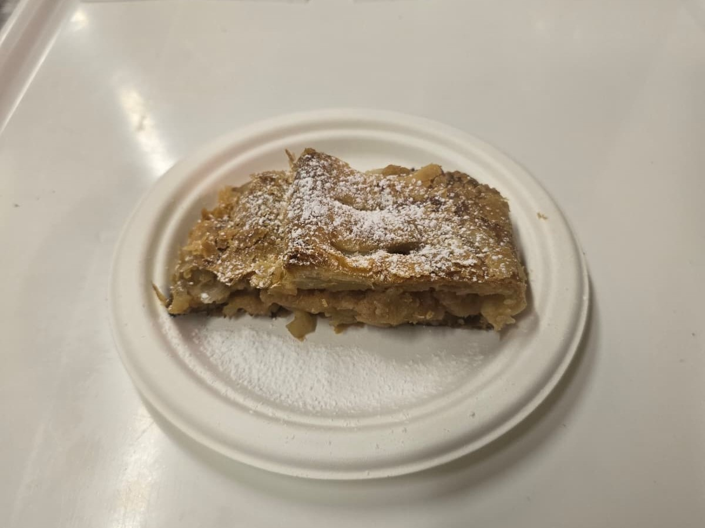

Primi
Su richiesta, mezza porzione di gnocchetti a € 4.50.

Gnocchetti al Formai dal Cít con Pepe e Noci
Il formai dal cít è un formaggio cremoso e piccante, ottenuto lavorando a mano formaggi stagionati fino a farli riposare nel "cit", il tradizionale vaso di terracotta che dà il nome al prodotto. Il suo sapore intenso si sposa con una nota di pepe e la croccantezza delle noci, per un condimento deciso e avvolgente.

Gnocchetti Tricolore: Pomodorini, Petuccia e Rucola
Un piatto molto tipico della tradizione locale: gnocchi conditi con pomodorini freschi, petuccia e rucola, per un tris di colori e sapori dell'estate.
Secondi

Tris di Sapori della Val Tramontina
Un assaggio completo delle eccellenze della vallata in un unico piatto: Pitina IGP, pistùm e formaggio salato, su un letto di polenta taragna.

Grigliata Mista con Polenta Taragna
Sovraccoscia di pollo, salsiccia e una bistecchina di maiale marinata, cotti alla griglia e serviti con polenta taragna abbrustolita.

Salsiccia con Polenta Taragna
La salsiccia artigianale, insaporita con spezie secondo la ricetta tradizionale, servita con fette di polenta taragna abbrustolita.

Formaggi con Polenta Taragna
Una selezione di formaggi locali: pecorino, formaggio salato e latteria, tre stagionature e caratteri diversi da assaporare fianco a fianco, accompagnati da polenta taragna appena abbrustolita.

Formaggi e Pitina IGP con Polenta Taragna
Selezione di formaggi locali — pecorino, formaggio salato e latteria — arricchita dalla pitina IGP, il salume simbolo della vallata, servita con polenta taragna abbrustolita.
La Trota
.jpeg)
Filetto di Trota con Patate Trifolate
La trota è l'anima di questa sagra: pesce del territorio, cotto a bassa temperatura sottovuoto per mantenerne la delicatezza, servito con patate trifolate. La proponiamo in quattro varianti.
Contorni

Fagioli con Cipolla
Fagioli cotti lentamente con cipolla dorata e un filo d'olio. Un contorno semplice della tradizione contadina.

Patatine Fritte Crunchy
Patatine fritte croccanti e dorate. Il contorno classico, buono con qualsiasi piatto.
Dolci

Strudel di Mele
Mele avvolte in una sfoglia sottile e dorata, cotte al forno secondo la tradizione contadina. Un dolce caldo e profumato di cannella.

Ricotta Fresca di Marsure con Salsa
Ricotta fresca di Marsure servita con una salsa a scelta tra frutti di bosco o arancia e amaretti sbriciolati. Un dolce al cucchiaio semplice e genuino, per chiudere in leggerezza.

🍯 Delizie del Giorno
Ogni giorno le nostre volontarie preparano dolci fatti in casa diversi: crostate, torte ai fichi e non solo. Chiedi alla cassa cosa c'è di disponibile oggi!